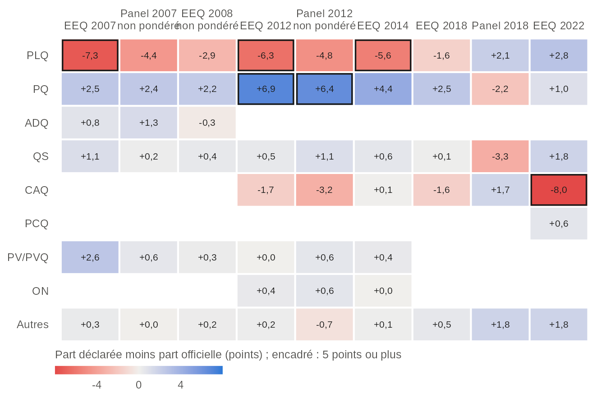
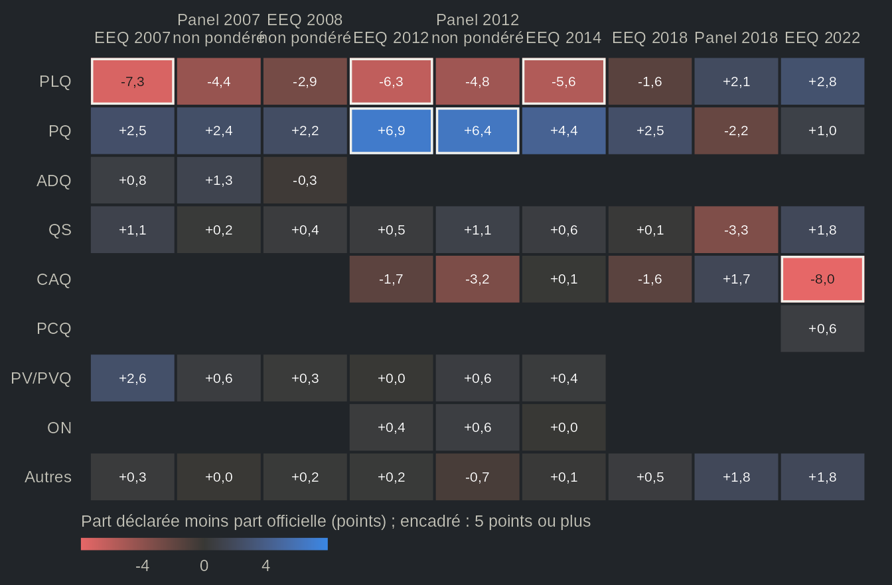

Validation par les résultats officiels et le recensement
Source:vignettes/articles/fr-validation.Rmd
fr-validation.RmdCette page télécharge 11 études (environ 16 Mo) la
première fois qu’elle s’exécute.
options(qesR.cache = "disk") les garde sur le disque pour
les sessions suivantes.
Jusqu’où les études harmonisées rejoignent-elles ce que l’on sait de l’électorat ? Cette page compare, pour chaque étude que couvre la spécification d’harmonisation :
- le vote déclaré aux résultats officiels de chaque élection générale, publiés par Élections Québec ;
- la participation déclarée à la participation officielle ;
- le genre, l’âge, la langue maternelle et la scolarité des répondants au recensement qui précède l’étude (Statistique Canada) ;
- quelques relations entre les réponses que toute mesure valide devrait montrer (validité de construit).
Chaque étude est harmonisée avec qes_harmonize() à
partir de son fichier de données original. Les mêmes comparaisons
tournent automatiquement sur les fichiers originaux : une erreur
d’appariement qui déplacerait ces chiffres serait détectée.
# every study the specification covers, harmonized from the original files,
# against the benchmarks that ship with qesR (internal functions, not part
# of qesR's interface)
report <- qesR:::.qes_validation_run("all")
report <- qesR:::.qes_validation_gate(report, qesR:::.qes_validation_recorded())1. Vote déclaré et résultats officiels
Pour chaque étude, le tableau donne l’indice de dissimilarité entre la distribution du vote déclaré et les parts officielles des votes valides : la moitié de la somme des écarts absolus entre les deux distributions, en points. C’est la part des répondants qui devraient changer de parti pour que les deux concordent ; 0 est une concordance parfaite. Les partis que la question de l’étude n’énumérait pas sont comptés comme « autre parti » du côté officiel, puisque c’est la seule réponse que leurs électeurs pouvaient donner.
| Étude | Élection | N (ont nommé un parti) | Indice, non pondéré | Indice, pondéré |
|---|---|---|---|---|
| qes1998 | QC1998 | 1126 | 9,4 | |
| qes2007 | QC2007 | 1727 | 7,7 | 7,3 |
| qes2007_panel | QC2007 | 1494 | 4,5 | |
| qes2008 | QC2008 | 898 | 3,2 | |
| qes2012 | QC2012 | 1274 | 11,0 | 8,0 |
| qes2012_panel | QC2012 | 633 | 8,7 | |
| qes2014 | QC2014 | 1283 | 4,9 | 5,6 |
| qes2018 | QC2018 | 2016 | 3,2 | 3,2 |
| qes2018_panel | QC2018 | 704 | 5,5 | 5,5 |
| qes2022 | QC2022 | 1101 | 9,0 | 8,0 |
L’indice pondéré utilise la pondération que la spécification
recommande pour la vague qui a posé la question ; qes2007,
qes2012, qes2014, qes2018,
qes2022 et le panel de 2018 en ont une. Les pondérations de
qes2007_panel, de qes2012_panel, des sondages
CROP et de qes1998 ne sont pas validées, et
qes2008 n’a pas de pondération recommandée (ses deux
pondérations sont calées sur le vote ou sur la participation) : leur
indice est non pondéré ; le tableau des pondérations décrit
la pondération de chaque étude. qes1998 n’a interrogé que
des francophones, une population que les résultats officiels ne
décrivent pas : l’étude est montrée à titre indicatif, sans être
vérifiée.


Pondéré avec la pondération de l'étude lorsqu'elle en a une utilisable ; l'étude de 2008 et les panels Durand de 2007 et 2012 sont non pondérés. Une case vide : le parti ne s'est pas présenté, ou l'étude le compte dans Autres. Les sondages de 1998, qui n'ont interrogé que des francophones, sont laissés de côté.
Vue en tableau
| Étude | Pondération | Parti | Déclaré moins officiel (points) |
|---|---|---|---|
| EEQ 2007 | pondéré | PLQ | -7,3 |
| EEQ 2007 | pondéré | PQ | +2,5 |
| EEQ 2007 | pondéré | ADQ | +0,8 |
| EEQ 2007 | pondéré | QS | +1,1 |
| EEQ 2007 | pondéré | PV/PVQ | +2,6 |
| EEQ 2007 | pondéré | Autres | +0,3 |
| Panel 2007 | non pondéré | PLQ | -4,4 |
| Panel 2007 | non pondéré | PQ | +2,4 |
| Panel 2007 | non pondéré | ADQ | +1,3 |
| Panel 2007 | non pondéré | QS | +0,2 |
| Panel 2007 | non pondéré | PV/PVQ | +0,6 |
| Panel 2007 | non pondéré | Autres | +0,0 |
| EEQ 2008 | non pondéré | PLQ | -2,9 |
| EEQ 2008 | non pondéré | PQ | +2,2 |
| EEQ 2008 | non pondéré | ADQ | -0,3 |
| EEQ 2008 | non pondéré | QS | +0,4 |
| EEQ 2008 | non pondéré | PV/PVQ | +0,3 |
| EEQ 2008 | non pondéré | Autres | +0,2 |
| EEQ 2012 | pondéré | PLQ | -6,3 |
| EEQ 2012 | pondéré | PQ | +6,9 |
| EEQ 2012 | pondéré | QS | +0,5 |
| EEQ 2012 | pondéré | CAQ | -1,7 |
| EEQ 2012 | pondéré | PV/PVQ | +0,0 |
| EEQ 2012 | pondéré | ON | +0,4 |
| EEQ 2012 | pondéré | Autres | +0,2 |
| Panel 2012 | non pondéré | PLQ | -4,8 |
| Panel 2012 | non pondéré | PQ | +6,4 |
| Panel 2012 | non pondéré | QS | +1,1 |
| Panel 2012 | non pondéré | CAQ | -3,2 |
| Panel 2012 | non pondéré | PV/PVQ | +0,6 |
| Panel 2012 | non pondéré | ON | +0,6 |
| Panel 2012 | non pondéré | Autres | -0,7 |
| EEQ 2014 | pondéré | PLQ | -5,6 |
| EEQ 2014 | pondéré | PQ | +4,4 |
| EEQ 2014 | pondéré | QS | +0,6 |
| EEQ 2014 | pondéré | CAQ | +0,1 |
| EEQ 2014 | pondéré | PV/PVQ | +0,4 |
| EEQ 2014 | pondéré | ON | +0,0 |
| EEQ 2014 | pondéré | Autres | +0,1 |
| EEQ 2018 | pondéré | PLQ | -1,6 |
| EEQ 2018 | pondéré | PQ | +2,5 |
| EEQ 2018 | pondéré | QS | +0,1 |
| EEQ 2018 | pondéré | CAQ | -1,6 |
| EEQ 2018 | pondéré | Autres | +0,5 |
| Panel 2018 | pondéré | PLQ | +2,1 |
| Panel 2018 | pondéré | PQ | -2,2 |
| Panel 2018 | pondéré | QS | -3,3 |
| Panel 2018 | pondéré | CAQ | +1,7 |
| Panel 2018 | pondéré | Autres | +1,8 |
| EEQ 2022 | pondéré | PLQ | +2,8 |
| EEQ 2022 | pondéré | PQ | +1,0 |
| EEQ 2022 | pondéré | QS | +1,8 |
| EEQ 2022 | pondéré | CAQ | -8,0 |
| EEQ 2022 | pondéré | PCQ | +0,6 |
| EEQ 2022 | pondéré | Autres | +1,8 |
2. Participation déclarée
| Étude | Élection | Pondération | N | Participation déclarée (%) | Participation officielle (%) | Écart (points) |
|---|---|---|---|---|---|---|
| qes1998 | QC1998 | non pondéré | 1483 | 87,4 | 78,3 | +9,1 |
| qes2007 | QC2007 | pondéré | 2162 | 90,7 | 71,2 | +19,5 |
| qes2007_panel | QC2007 | non pondéré | 2054 | 85,3 | 71,2 | +14,1 |
| qes2008 | QC2008 | non pondéré | 1131 | 87,2 | 57,4 | +29,8 |
| qes2012 | QC2012 | pondéré | 1486 | 93,2 | 74,6 | +18,6 |
| qes2012_panel | QC2012 | non pondéré | 844 | 92,2 | 74,6 | +17,6 |
| qes2014 | QC2014 | pondéré | 1499 | 88,9 | 71,4 | +17,5 |
| qes2018 | QC2018 | pondéré | 2635 | 83,2 | 66,5 | +16,8 |
| qes2018_panel | QC2018 | pondéré | 842 | 83,7 | 66,5 | +17,2 |
| qes2022 | QC2022 | pondéré | 1215 | 90,0 | 66,2 | +23,8 |
La participation officielle est le nombre de bulletins déposés sur le nombre d’électeurs inscrits. La participation déclarée est la part des répondants qui disent avoir voté parmi ceux qui ont répondu oui ou non ; les personnes non inscrites ou non admissibles, et celles qui ne savaient pas ou n’ont pas voulu répondre, sont laissées de côté.
3. Répondants et recensement
Chaque étude est comparée au recensement qui précède son élection (2006, 2011, 2016 ou 2021). Le genre et l’âge sont comparés chez les 18 ans et plus ; pour la langue maternelle et la scolarité, dont les tableaux n’ont pas de coupure à 18 ans, la coupure d’âge publiée la plus proche est utilisée, et les répondants sont coupés de la même façon lorsque leur âge est connu :
| Marge | Recensement | Population comparée | Tableau |
|---|---|---|---|
| Genre, âge (six tranches) | 2016, 2021 | 18 ans et plus | 98-10-0020-01 |
| Genre, âge (six tranches) | 2011 | 18 ans et plus | Profil du recensement 98-316-XWE2011001 |
| Genre, âge (six tranches) | 2006 | 18 ans et plus | 97-551-XCB2006009 |
| Langue maternelle | 2011, 2016, 2021 | 20 ans et plus, hors établissements, une seule langue maternelle | 98-10-0218-01 |
| Scolarité | 2006 à 2021 | 25 ans et plus, ménages privés | 98-10-0384-01 |
Les effectifs de scolarité de 2011 viennent de l’Enquête nationale auprès des ménages, qui était facultative. Le tableau de 2006 97-551-XCB2006009 n’est plus sur le site de Statistique Canada ; son fichier a été récupéré dans l’Internet Archive. Le seul tableau de 2006 trouvé avec la langue maternelle selon l’âge compte les résidents des établissements et beaucoup plus de langues maternelles multiples : 2006 n’a donc pas de comparaison de la langue maternelle. La langue maternelle est comparée parmi les personnes qui déclarent une seule langue maternelle : les réponses multiples du recensement et les réponses des enquêtes qui nomment deux langues sont laissées de côté. La scolarité est comparée en deux groupes : universitaire (tout certificat, diplôme ou grade universitaire) ou non.
| Étude | Recensement | Pondération | Genre | Âge | Langue maternelle | Scolarité |
|---|---|---|---|---|---|---|
| qes_crop_2007_2010 | Census 2006 | non pondéré | 6,9 | 5,9 | 13,5 | |
| qes2007 | Census 2006 | non pondéré | 5,2 | 11,2 | 20,8 | |
| qes2007 | Census 2006 | pondéré | 0,1 | 6,6 | 20,5 | |
| qes2007_panel | Census 2006 | non pondéré | 5,7 | 6,1 | 10,6 | |
| qes2008 | Census 2006 | non pondéré | 2,1 | 3,8 | 22,9 | |
| qes2012 | Census 2011 | non pondéré | 2,3 | 15,9 | 4,5 | 18,5 |
| qes2012 | Census 2011 | pondéré | 0,0 | 0,1 | 0,9 | 17,6 |
| qes2012_panel | Census 2011 | non pondéré | 8,8 | 11,9 | 9,4 | |
| qes2014 | Census 2011 | non pondéré | 6,5 | 4,7 | 8,1 | 21,3 |
| qes2014 | Census 2011 | pondéré | 0,0 | 0,1 | 4,8 | 9,1 |
| qes2018 | Census 2016 | non pondéré | 0,2 | 14,0 | 8,6 | 18,7 |
| qes2018 | Census 2016 | pondéré | 0,1 | 7,9 | 9,3 | 17,6 |
| qes2018_panel | Census 2016 | non pondéré | 0,1 | 8,5 | ||
| qes2018_panel | Census 2016 | pondéré | 0,3 | 8,7 | ||
| qes2022 | Census 2021 | non pondéré | 1,2 | 2,5 | 11,9 | 19,4 |
| qes2022 | Census 2021 | pondéré | 0,0 | 1,2 | 0,1 | 3,5 |
Chaque cellule est un indice de dissimilarité en points (0 est une concordance parfaite) ; une cellule vide est une marge que l’étude n’a pas mesurée, ou que les tableaux du recensement recueillis ne publient pas pour cette année (la langue maternelle en 2006).


Études qui ont une pondération utilisable, pondérées ; le recensement qui précède chaque étude (Statistique Canada). Le genre et la scolarité ont deux catégories : une seule rangée est montrée (femmes ; université), l'autre en est le miroir. Une marge est marquée cal. quand chaque catégorie est à moins d'un demi-point du recensement, comme l'est par construction une marge sur laquelle la pondération est calée ; un bon accord n'y dit rien de la représentativité.
Vue en tableau
| Marge | Catégorie | Étude | Enquête moins recensement (points) | À moins d'un demi-point (cal.) |
|---|---|---|---|---|
| Scolarité | Université | EEQ 2007 | +20,5 | |
| Scolarité | Université | EEQ 2012 | +17,6 | |
| Scolarité | Université | EEQ 2014 | +9,1 | |
| Scolarité | Université | EEQ 2018 | +17,6 | |
| Scolarité | Université | EEQ 2022 | +3,5 | |
| Langue maternelle | Anglais | EEQ 2012 | +0,9 | |
| Langue maternelle | Anglais | EEQ 2014 | -0,9 | |
| Langue maternelle | Anglais | EEQ 2018 | +9,3 | |
| Langue maternelle | Anglais | Panel 2018 | +8,4 | |
| Langue maternelle | Anglais | EEQ 2022 | +0,1 | oui |
| Langue maternelle | Français | EEQ 2012 | -0,4 | |
| Langue maternelle | Français | EEQ 2014 | +4,8 | |
| Langue maternelle | Français | EEQ 2018 | -2,0 | |
| Langue maternelle | Français | Panel 2018 | +0,4 | |
| Langue maternelle | Français | EEQ 2022 | -0,1 | oui |
| Langue maternelle | Autre | EEQ 2012 | -0,4 | |
| Langue maternelle | Autre | EEQ 2014 | -3,9 | |
| Langue maternelle | Autre | EEQ 2018 | -7,3 | |
| Langue maternelle | Autre | Panel 2018 | -8,7 | |
| Langue maternelle | Autre | EEQ 2022 | -0,1 | oui |
| Âge | 18-24 | EEQ 2007 | +1,5 | |
| Âge | 18-24 | EEQ 2012 | +0,0 | oui |
| Âge | 18-24 | EEQ 2014 | +0,0 | oui |
| Âge | 18-24 | EEQ 2018 | +0,4 | |
| Âge | 18-24 | EEQ 2022 | -0,1 | |
| Âge | 25-34 | EEQ 2007 | +1,4 | |
| Âge | 25-34 | EEQ 2012 | +0,0 | oui |
| Âge | 25-34 | EEQ 2014 | +0,0 | oui |
| Âge | 25-34 | EEQ 2018 | +2,3 | |
| Âge | 25-34 | EEQ 2022 | +0,1 | |
| Âge | 35-44 | EEQ 2007 | +3,7 | |
| Âge | 35-44 | EEQ 2012 | +0,0 | oui |
| Âge | 35-44 | EEQ 2014 | +0,0 | oui |
| Âge | 35-44 | EEQ 2018 | -4,0 | |
| Âge | 35-44 | EEQ 2022 | +1,1 | |
| Âge | 45-54 | EEQ 2007 | -0,8 | |
| Âge | 45-54 | EEQ 2012 | +0,0 | oui |
| Âge | 45-54 | EEQ 2014 | +0,0 | oui |
| Âge | 45-54 | EEQ 2018 | -3,9 | |
| Âge | 45-54 | EEQ 2022 | -0,2 | |
| Âge | 55-64 | EEQ 2007 | -2,5 | |
| Âge | 55-64 | EEQ 2012 | +0,0 | oui |
| Âge | 55-64 | EEQ 2014 | +0,0 | oui |
| Âge | 55-64 | EEQ 2018 | +4,6 | |
| Âge | 55-64 | EEQ 2022 | -0,9 | |
| Âge | 65 et plus | EEQ 2007 | -3,3 | |
| Âge | 65 et plus | EEQ 2012 | +0,0 | oui |
| Âge | 65 et plus | EEQ 2014 | +0,0 | oui |
| Âge | 65 et plus | EEQ 2018 | +0,7 | |
| Âge | 65 et plus | EEQ 2022 | +0,0 | |
| Genre | Femmes | EEQ 2007 | +0,1 | oui |
| Genre | Femmes | EEQ 2012 | +0,0 | oui |
| Genre | Femmes | EEQ 2014 | +0,0 | oui |
| Genre | Femmes | EEQ 2018 | +0,1 | oui |
| Genre | Femmes | Panel 2018 | -0,3 | oui |
| Genre | Femmes | EEQ 2022 | +0,0 | oui |
4. Relations entre les réponses
Ces vérifications ne se comparent à aucune source extérieure. Elles demandent si les réponses harmonisées sont liées entre elles comme des décennies de recherche disent qu’elles devraient l’être ; une erreur de correspondance (deux codes de partis inversés, une échelle renversée) les ferait échouer.
| Étude | Attendu | Valeur | Comparé à | Vérifié |
|---|---|---|---|---|
| qes2007 | Partisans qui ont voté pour leur parti : au moins 55 % (%) | 83,4 | oui | |
| qes2008 | Partisans qui ont voté pour leur parti : au moins 55 % (%) | 86,9 | oui | |
| qes2012 | Les votants sont plus intéressés que les abstentionnistes (moyenne, 1-4) | 2,9 | 2,3 | oui |
| qes2012 | Les électeurs de QS sont à gauche de ceux de la CAQ (moyenne, 0-10) | 3,1 | 6,3 | oui |
| qes2012 | Partisans qui ont voté pour leur parti : au moins 55 % (%) | 83,0 | oui | |
| qes2012 | Oui à l’indépendance : électeurs du PQ plus de 40 points au-dessus de ceux du PLQ (%) | 84,5 | 1,3 | oui |
| qes2014 | Les votants sont plus intéressés que les abstentionnistes (moyenne, 1-4) | 3,0 | 2,3 | oui |
| qes2014 | Les électeurs de QS sont à gauche de ceux de la CAQ (moyenne, 0-10) | 3,4 | 5,7 | oui |
| qes2014 | Partisans qui ont voté pour leur parti : au moins 55 % (%) | 84,2 | oui | |
| qes2014 | Oui à l’indépendance : électeurs du PQ plus de 40 points au-dessus de ceux du PLQ (%) | 87,4 | 2,9 | oui |
| qes2018 | Les votants sont plus intéressés que les abstentionnistes (moyenne, 1-4) | 3,0 | 2,5 | oui |
| qes2018 | Les électeurs de QS sont à gauche de ceux de la CAQ (moyenne, 0-10) | 3,7 | 6,0 | oui |
| qes2018 | Partisans qui ont voté pour leur parti : au moins 55 % (%) | 82,9 | oui | |
| qes2018 | Oui à l’indépendance : électeurs du PQ plus de 40 points au-dessus de ceux du PLQ (%) | 85,9 | 2,5 | oui |
| qes2018_panel | Les électeurs de QS sont à gauche de ceux de la CAQ (moyenne, 0-10) | 3,8 | 5,7 | oui |
| qes2022 | Les électeurs de QS sont à gauche de ceux de la CAQ (moyenne, 0-10) | 3,7 | 5,5 | oui |
| qes2022 | Partisans qui ont voté pour leur parti : au moins 55 % (%) | 78,6 | oui | |
| qes2022 | Oui à l’indépendance : électeurs du PQ plus de 40 points au-dessus de ceux du PLQ (%) | 82,0 | 2,2 | oui |
Lire les écarts
La participation est surdéclarée dans toutes les
études, ici de 14 à 30 points (sans qes1998,
limitée aux francophones). Deux causes s’additionnent, qu’on ne peut pas
séparer avec ces données : des abstentionnistes disent avoir voté, et
les personnes qui votent acceptent plus volontiers de répondre aux
enquêtes électorales. Les formats de question qui ménagent la face de
qes2018 et de qes2022 (plusieurs façons de
dire qu’on n’a pas voté) visent à réduire la première cause ; les
pondérations calées sur l’âge, le genre, la scolarité et la langue ne
corrigent ni l’une ni l’autre. Les deux taux ne comptent pas non plus
les mêmes personnes : le taux officiel porte sur les électeurs inscrits,
dont certains ont déménagé ou sont décédés, alors que les enquêtes
interrogent les adultes qu’elles ont joints. Toute analyse de la
participation tirée de ces études décrit les répondants, pas
l’électorat.
Le vote déclaré est un rappel, pas le vote. Il est
demandé de quelques jours à quelques semaines après l’élection, à des
répondants dont la participation est elle-même sélective. On dit souvent
que le rappel dérive vers le gagnant, mais on ne voit pas ici une simple
prime au gagnant : dans qes2012, le PQ, qui a gagné par
moins d’un point, est surdéclaré de 6,9 points et le PLQ sous-déclaré de
6,3 ; dans qes2022, la CAQ, qui a gagné, est sous-déclarée
de 8,0 points. Qui répond compte au moins autant que la mémoire : les
panels en ligne tendent à surreprésenter les personnes engagées en
politique et scolarisées, et les électeurs de certains partis sont
peut-être plus difficiles à joindre. La pondération sur les
caractéristiques sociodémographiques ne l’efface pas et peut déplacer
l’indice dans un sens ou dans l’autre (comparez les deux colonnes du
premier tableau).
La question compte. Un parti que la question
n’énumérait pas ne pouvait être déclaré que comme « autre » (le Parti
vert dans qes2018 et qes2022, le Parti
conservateur dans qes2018). Les deux panels Durand de 2007
et de 2012 demandent le vote sans lire les partis, par téléphone ; les
autres études lisent ou montrent une liste. Les cotes de
qes_spec(view = "crosswalk") consignent ces
différences.
Les échantillons ne sont pas la population du
recensement. Le recensement compte les résidents, y compris des
personnes qui ne sont pas citoyennes et ne peuvent pas voter ;
qes2022 n’a échantillonné que des citoyens. Les tableaux du
recensement sur la langue maternelle et la scolarité portent sur les
ménages privés, et leurs coupures d’âge diffèrent de 18 ans et plus
(section 3). Trois écarts ressortent. Scolarité : chaque étude compte
plus de répondants ayant fait des études universitaires que le
recensement ne compte de titulaires d’un titre universitaire, en partie
parce que les enquêtes demandent le niveau atteint (une année
d’université compte) et le recensement le titre obtenu, et en partie,
très probablement, parce que les personnes plus scolarisées acceptent
plus volontiers de répondre aux enquêtes ; qes2022,
pondérée sur la scolarité, est la seule étude proche du recensement.
Langue maternelle dans qes2018 : les anglophones sont
surreprésentés et les allophones sous-représentés ; la pondération de
2018 corrige le français par rapport à toutes les autres langues (son
rapport méthodologique, tableau 14), pas la répartition entre l’anglais
et les autres langues. Âge dans qes2018 : sa pondération
corrige l’âge par cellules générationnelles (16-18, 19-38, 39-58, 59-73,
74 et plus : tableau 12 du même rapport), qui chevauchent les tranches
de dix ans utilisées ici ; à l’intérieur de celles-ci, l’échantillon
pondéré compte encore trop peu de personnes de 35 à 54 ans et trop de
personnes de 55 à 64 ans.
Ces repères sont grossiers. Un indice peut cacher des erreurs qui se compensent : en 2012, le PQ et le PLQ ont terminé à moins d’un point l’un de l’autre, si bien qu’une étude qui aurait inversé leurs codes concorderait à peu près aussi bien avec les résultats officiels. C’est pourquoi l’harmonisation est aussi vérifiée par les effectifs exacts de chaque réponse dans les fichiers originaux et par les relations de la section 4, et pourquoi chaque appariement est vérifié par rapport au questionnaire.
Sources
- Élections Québec, résultats officiels des élections générales de 1998 à 2022, votes par parti et bulletins déposés pour l’ensemble du Québec, tirés de ses fichiers de résultats archivés (par exemple https://donnees.electionsquebec.qc.ca/production/provincial/resultats/archives/gen2022-10-03/resultats.json).
- Statistique Canada, tableaux du recensement 98-10-0020-01 (âge et genre, 2016 et 2021), 98-10-0218-01 (langue maternelle selon l’âge, 2011 à 2021) et 98-10-0384-01 (plus haut niveau de scolarité selon l’âge et le genre, 2006 à 2021) ; le Profil du recensement de 2011 (catalogue 98-316-XWE2011001 : âge selon le sexe) ; et le tableau de 2006 97-551-XCB2006009 (âge selon le sexe ; la copie du fichier de Statistique Canada conservée par l’Internet Archive).
Les tableaux de référence, avec la source de chaque ligne, se trouvent dans le dépôt source de qesR.